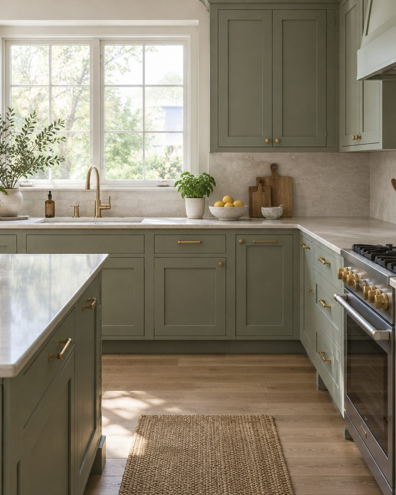
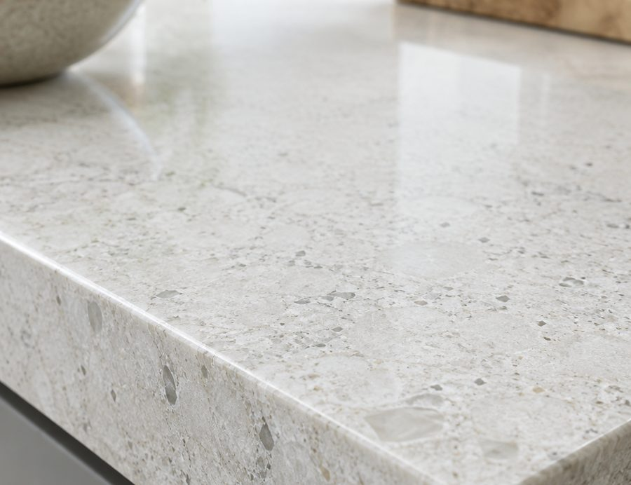

О работе · 03
ИП Жулев Александр Владимирович, Могилёв. Замена кухонных фасадов, столешниц и ремонт. Ниже как идёт работа и о чём спрашивают чаще всего.

Стандартных кухонь почти не бывает: корпус стоит с отклонениями, стена не под 90 градусов, столешница уложена с уклоном. Если делать двери по номинальным размерам, зазоры будут гулять по всей линии.
Поэтому мы сначала снимаем фактические размеры, а потом считаем материал. И говорим прямо, если корпус не держит новые двери: иногда дешевле починить его, чем потом переделывать фасады.
Не возраст, а три вещи. Первая: кромка на столешнице у мойки. Вода попадает в стык, плита разбухает, и восстановить её уже нельзя.
Вторая: провисшие двери. Петли со временем проседают, двери начинают цеплять друг друга, и кухня выглядит «разболтанной» даже при целых фасадах.
Третья: выгоревшая сторона у окна. Один и тот же материал за пять лет меняет тон неравномерно, и заменить одну дверь «в цвет» уже не получится: меняется вся линия.
Мы говорим об этом до заказа, потому что это влияет на выбор материала сильнее, чем картинка в каталоге.

Вопросы
Приезжаем, смотрим корпус, показываем образцы. После этого называем цену и срок.